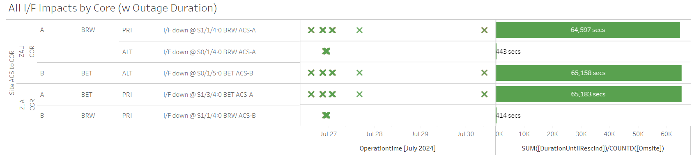

Weekly Highlights 20240724-20240731
7/24 - DX1 2-Day Intrusive Maintenance
- 7/24 07:01 - GUS Switchover - SM9
- SZ1 to Primary / DX1 to Backup for
2 Day intrusive maintenance for antenna work and power panel inspections- Day 1 - ref LIR 836735124
- Day 2 - ref LIR 836740924
- 7/24 12:01 - DX1 to Maintenance for intrusive maintenance Day 1; Control Powered and restored to Backup at 7/24 20:56
- 7/25 12:35 - GUS Switchover - SM9 - SZ1 to Primary / DX1 to Backup for Day 2 of intrusive maintenance (no impact on Day 2)
7/24 - ZMA WRE-C Control Powered for SE 30 Minor Alarm
- 7/24 11:23 - ZMA WRE-C to Maintenance and Control Powered to attempt to address recurring SE 30 Minor Alarm -- ref LAD 829027832; restored to Normal at 7/24 12:56
7/25 - SZ1 GUS Fault from Primary
- 7/25 11:01 - GUS Switchover - SM9 - SZ1 GUS Faulted from Primary with SEs 197 / 202 - L1/L5 LNA Controller Failure -- ref LIR 49273621; Control Powered and restored to Backup at 7/25 11:51
- 7/25 12:35 - GUS Switchover - SM9 - SZ1 to Primary / DX1 to Backup for Day 2 of intrusive maintenance (no impact on Day 2)
7/25 - CM1 GUS Fault from Primary
- 7/25 22:54 - GUS Switchover - S15
- CM1 GUS Faulted from Primary with SE 193 C5
KPA Failure (RFU Equip Fault); after initial
Control Power and restored to Backup at 7/26
00:27, CM1 GUS Faulted again at 7/26 01:08 with
same SEs;
TECH RPTS airlfow sensor issue and made adjustments-- ref LAD 838097524; Control Powered and restored to Backup at 7/26 03:21
7/28 - NOCC O&M Locked Up during Maneuver Load
- 7/28 14:34 - NOCC O&M was manually rebooted after locking up during SM9 Maneuver Load ~13 min previously (WPR WAAS00129757) -- ref LCM 50317521; restored to Normal at 7/28 14:49
7/28 - ZAN WRE-C Fault
- 7/28 15:12 - ZAN WRE-C Faulted with SEs 29, 30, 52, 53, 59; Control Powered and restored to Normal at 7/28 15:55
7/30 - ZOB WRE-B Freq Std Failed
- 7/30 07:41 - ZOB WRE-B Faulted with SEs 28, 52,
53, 59; Control Powered but could not be
restored -- cycling in Maintenance -- ref LIR
839714624; recommend check Freq Std --
part on order; from site tech:
When opening the cabinet on WRE-B there was a strong burnt electronics smell and the power LED was off on the frequency standard. 120VAC was tested on the power cable and it was verified good. When the power cable was plugged back into the frequency standard there was a loud buzzing noise and the lights on the freq standard were flickering. Power cable was left unplugged due to potential additional danger to the system.
7/31 - Ring 1 Restored to MX
- 7/31 04:28 - MTP Ring 1 comms restored -- ~1.8 million seconds; down since 7/9
- 7/31 04:42 - MMX Ring 1 comms restored -- ~167760 seconds; down since 7/29
- 7/31 07:16 - MMX WRE-A restored to Normal
Various Comm Impacts
* Does not include single-line impacts <60 seconds which do not cause an outage
YFB Comms
- 7/25 22:48 - YFB Ring 1 comms cleared (down since 7/23; ~199840 seconds)
- 7/26 18:05 - YFB Ring 1 comms flapping then down hard at 7/26 20:16; line cleared at 7/28 18:51 (~124484 seconds)
- 7/29 17:01 - YFB Ring 1 comms flapping then down hard at 7/29 19:10; loopback testing at 7/30 04:06...
- 7/31 05:08 - YYR Ring 1 down hard + loopback testing impacting YYR Ring 1 and YFB Ring 1 to troubleshoot YFB Ring 1 comms down since 7/29; last event for YYR Ring 1 cleared at 7/31 09:41 (~16389 seconds) -- YFB Ring 1 still down hard...
BRW Comms
- 7/26 14:49 - BRW Ring 1 PRI + BET Ring 1 PRI /
Ring 2 ALT comms flapping then down hard at 7/26
14:53
- All lines came back up to flapping at 7/26 20:53, but down hard again at 7/26 21:03
- All lines came back up to flapping at 7/27 01:44, but down hard again at 7/27 02:04
- All lines finally cleared at 7/27 16:05 (~65000 seconds total)

- 7/26 22:11 - BRW Ring 1 ALT / Ring 2 PRI comms flapping; both lines cleared at 7/26 23:16 (~440 seconds total)
- 7/30 09:27 - BRW Ring 1 PRI + BET Ring 1 PRI / Ring 2 ALT + BR2 Ring 1 ALT / Ring 2 PRI comms took a ~30 second hit
Other Sites
- 7/24 07:32 - BIL Ring 1 PRI / Ring 2 ALT comms down hard; both lines cleared at 7/24 09:56 (~8039 seconds)
- 7/25 06:00 - YWG Ring 1 PRI / Ring 2 ALT comms took a ~65 second hit
- 7/25 16:33 - CDB Ring 1 comms down hard; line cleared at 7/25 23:43 (~25809 seconds)
- 7/26 17:32 - AP1 Ring 1 ALT / Ring 2 PRI comms took a ~40 second hit
- 7/30 08:26 - YYR Ring 2 comms down hard; line cleared at 7/30 08:39 (~731 seconds)
- 7/31 05:15 - CDB Ring 1 comms flapping; last event cleared at 7/31 07:09 (~231 seconds total)
- 7/31 14:52 - AP1 Ring 1 ALT / Ring 2 PRI comms flapping; last event cleared at 7/31 16:13 (~116 seconds)
MX Comm Events
- 7/24 22:52 - MSD / MMX Ring 1 comms down hard -- OFFLINE; both lines cleared at 7/27 13:16 (~224395 seconds)
- 7/29 06:04 - MSD / MMX Ring 1 comms down hard -- OFFLINE...
- 7/31 01:16 - MMD Ring 1 comms (Ethernet) down hard; line cleared at 7/31 01:20 (~250 seconds) -- Note: I/F sig events for all MX sites even though Ethernet circuit has only been delivered to MMD
- 7/31 04:28 - MTP Ring 1 comms restored -- ~1.8 million seconds; down since 7/9
- 7/31 04:42 - MMX Ring 1 comms restored -- ~167760 seconds; down since 7/29
- 7/31 07:24 - MMX Ring 1 comms flapping; last event cleared at 7/31 07:34 (~688 seconds)
SSM-WAAS-066 Circuits Outstanding
- OTZ - Following circuits delivered
/ SA'd -- Circuit Validation
target
9/9/2024
- Ring 1 PRI to ZAU - FTIH-WS-053504
- Ring 2 PRI to ZLA - FTIH-WS-053508
- Ring 2 ALT to ZLA - FTIH-WS-053509
- BRW - Ring 2 ALT to ZLA -
FTIH-WS-053531
- 5/23 17:35 - BRW Ring 2
ALT comms down
hard --
ISR 0521-0090; ref LIR 802755624 - Router replacement did not clear issue; Troubleshooting ongoing...
- 5/23 17:35 - BRW Ring 2
ALT comms down
hard --
MPR - Both Rings
- 7/24 06:05 - MPR Ring 1 comms down hard -- OFFLINE...
MSD - Both Rings
- 7/29 06:04 - MSD / MMX Ring 1 comms
down hard -- OFFLINE...
- 7/31 04:42 - MMX Ring 1 comms restored -- ~167760 seconds; down since 7/29
- MSD still down...
List of current offline WREs
List of current offline WREs -- ref WAAS Status Monitor
All Depot shipments to Mexico are halted until the customs process can be finalized
- ZOB WRE-B - 7/30-... -
Freq Std
strong burnt electronics smell and the power LED was off; part on order - MMX WRE-C - 5/15-... - Processor failed and could not be restored
- MPR WRE-B - 5/3-... - Inits failing -- looks like a bad freq std; due to shipping issues, there is no spare Freq Std and no ETA to recover WRE-B...
5/11/23-... - MX Ring 2 Satcom Upgrade
MX WAAS Sites comm upgrades in progress:
- 6/5 - Troubleshooting at ZLA-Tijuana shows 4 of 5 circuits have a telco issue localized to Tijuana that must be resolved by FTI; for the MSD circuit, Tijuana could see a loop from ZLA, but ZLA could not see the loop locally -- possible cable issue at ZLA
- Frequentis coordinating with SENEAM at TJX to complete end-to-end testing from remote site to TJX
- After successful testing to TJX; comms should come up at ZLA (if not, coordinate with FTI Harris)
- MMX Ring 2 is currently green, but no UDP packets are coming through

Major Events


Comm Events

Mexico